{{0-1}}{{1}}Ça s’appelle un LiaScript par récursivité, ça ne sert à rien, mais c’est POSSIBLE.
--{{0}}--LiaScript a pu être présenté par son créateur André Dietrich comme une alternative aux LMS1 (cf. un article de son blog datant de 2020), ce qu’il peut être en raison de sa grande plasticité. Mais on peut tout aussi bien concevoir LiaScript comme un outil complémentaire des LMS tels que Moodle.
Moodle, LiaScript, Scenari… et si on se faisait surtout plein de câlins ?
{{1-2}}<div style="color:white; display:flex; align-items:center;">
<div style="font-size: 1.2em;"><strong>Moodle et consort (LMS) : les bons côtés</strong></div>
</div> <ul>
<li> <span style="font-size: 1.2em;"><strong>Centralisation institutionnelle</strong></span> : les cours sont conçus au sein de l'environnement numérique des établissements ; </li>
<li> <span style="font-size: 1.2em;"><strong>Suivi et évaluation</strong></span> : outils pour tracker le suivi et les progrès, notifier les échéances (par mail ou mobile), certifier les compétences et mesurer l’efficacité via des rapports ; </li>
<li> <span style="font-size: 1.2em;"><strong>Polyvalence fonctionnelle</strong></span> : grande diversité d'activités qui vont de la page de cours à l'intégration de SCORMS, du H5P natif, des wiki, etc. </li>
</ul> {{2-3}}<div style="color:white; display:flex; align-items:center;">
<div style="font-size: 1.2em;"><strong>Moodle et consort (LMS) : les moins bons côtés</strong></div>
</div> <ul>
<li> <span style="font-size: 1.2em;"><strong>Encapsulage institutionnel</strong></span> : les contenus pédagogiques sont d'abord conçus pour une communauté spécifique avec des droits d'accès spécifiques (même s'il est possible d'ouvrir largement les contenus), le partage, la réutilisation et le remixage n'en est pas facilité ; </li>
<li> <span style="font-size: 1.2em;"><strong>Interface graphique utilisateur lourde</strong></span> : le nombre de clics nécessaires pour intervenir sur une activité peut être important, lourdeur augmentée par la lenteur des serveurs institutionnels (web, base de données, utilisateurs en simultané) ; </li>
<li> <span style="font-size: 1.2em;"><strong>La tendance au tracking overkill</strong></span> : systématisation du tracking (allez voir les logs d'un cours sur Moodle) avec une granularité des données comportementales pas forcément nécessaire pour l'UX et l'amélioration continue. </li>
</ul> --{{0}}--J’utilise à titre personnel une définition assez simple de ce que sont les REL, celle de David Wiley (cf. La Fabrique REL ainsi que le blog de David Wiley), qui me rappelle les 5W des journalistes. Les 5R font office de critères pour définir si telle ou telle ressource est bien ” libre “. Je ne détaille pas plus, et je vais vous montrer concrètement comment une ressource éducative qui a été faite sur LiaScript permet nativement ces 5 actions.
.--------------. .-------------.
| Réutiliser | | Réviser |
| . <-. | | . <-. |
+-----> ( ) +-------> ( + ) +------+
| | `-> ' | | `-> ' | |
| '--------------' '-------------' |
.----+----. .-----V-----.
| Retenir | | Remixer |
| | | | \ / |
| | v | | | V V |
| +---+ | | ^ ^ |
'----^----' | / \ |
| '-----+-----'
| .----------------. |
| | Redistribuer | |
| | ^ ^ ^ | |
+---------------+ \ | / <----------------+
| .+. |
| ( ) |
| `-' |
'----------------'L’action retain/retenir, c’est :
” make, own, and control a copy of the resource ”
– David Wiley (Defining the “Open” in Open Content and Open Educational Ressources, 2023)
--{{1}}--Mettons que je traîne sur GitHub et que je tombe sur ce cours (coucou Damien), il est pile dans mon sujet, et son auteur a pris la peine de mentionner de manière explicite la licence de réutilisation, on est sur un CC-BY classique (donc réutilisation permisee avec mention de l’auteur).
{{1-2}}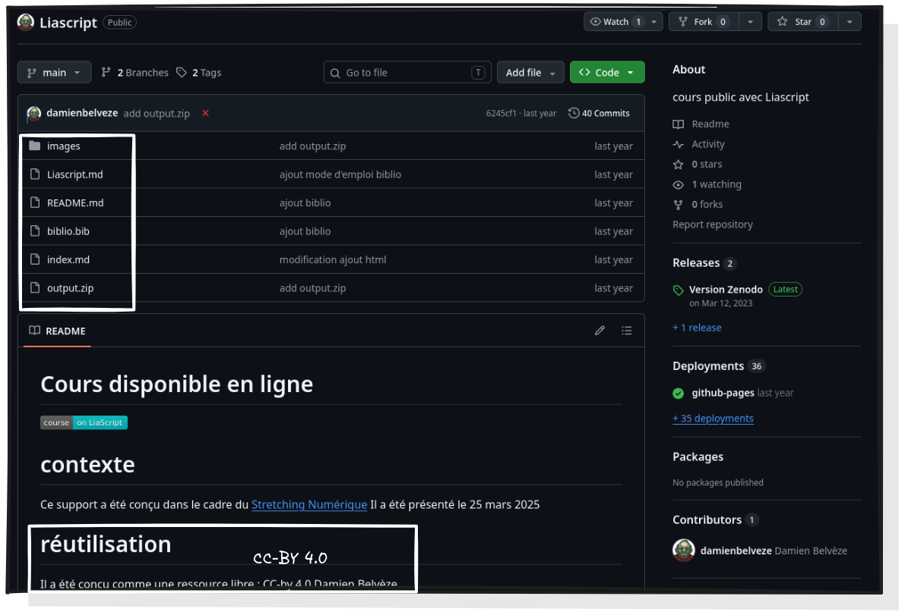
--{{2}}--Le fonctionnement de GitHub est pensé pour ce genre de cas, je peux forker le répertoire, c’est-à-dire que j’en crée une copie qui va directement dans la liste de mes répertoires sur mon compte.
{{2-3}}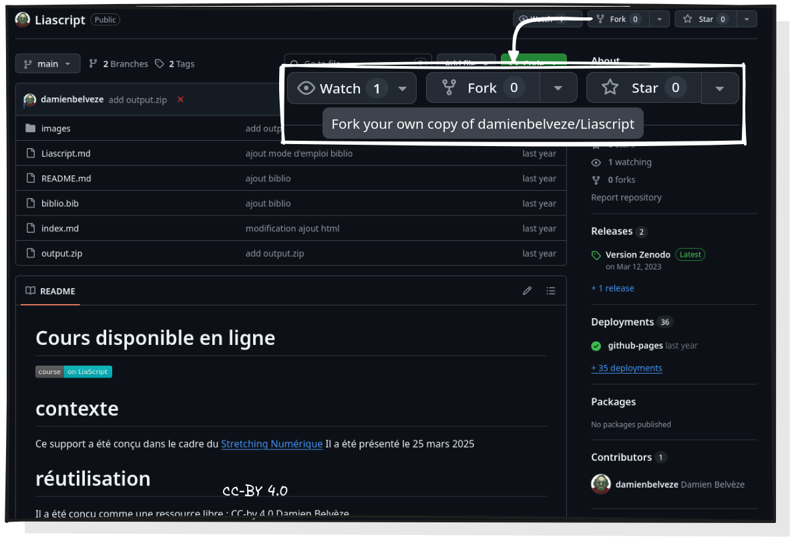
--{{3}}--Je lui donne un nom, pourquoi pas une description et je crée le Fork.
{{3-4}}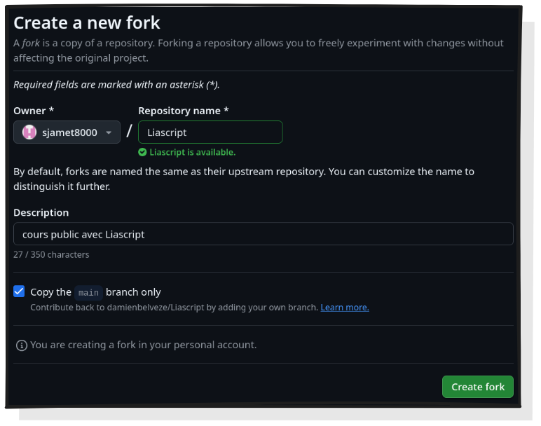
--{{4}}--Je retrouve le répertoire forké avec tout son contenu, je peux le modifier dans porter atteinte à l’intégrité du répertoire d’origine, tout en conservant son historique, donc une traçabilité des modifications.
{{4-5}}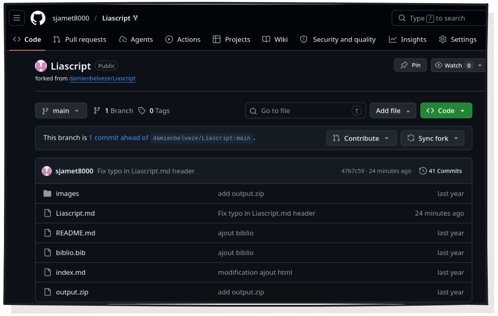
L’action revise/réviser, c’est :
” edit, adapt, and modify your copy of the resource ”
– David Wiley (Defining the “Open” in Open Content and Open Educational Ressources, 2023)
--{{0}}--A partir de ce moment-là, je suis libre de faire ce que je veux sur le contenu du cours, ça n’a pas de conséquence sur le répertoire d’origine.
Je peux par exemple corriger une minuscule faute que j’ai repéré dans le titre.
--{{1}}--Dans GitHub je ne peux pas corriger directement dans l’affichage
Preview, mais il me suffit de cliquer sur
Edit this file pour afficher le Code qui, lui, est
éditable.
{{1-2}}
--{{2}}--Je supprime le ” s ” en trop (je vous invite à aller voir son cours qui est évidemment d’excellente facture).
{{2-3}}Le Code est austère, mais c’est un type d’affichage auquel
il faut s’habituer ! 
{{3-4}}Autre point de vocabulaire, ne cherchez pas le bouton save
ici. Pour enregistrer vos modifications, même minimes, cliquez sur
Commit changes..., décrivez la modification, puis sur
Commite Changes, voilà vous avez ” sauvegardé ” ! 
--{{3}}--Il n’y a pas de traduction parfaite pour le terme ” commit ” qu’on peut entendre comme le fait de valider une modification.
L’action reuse/réutiliser, c’est :
” combine your original or revised copy of the resource with other existing material to create something new ”
– David Wiley (Defining the “Open” in Open Content and Open Educational Ressources, 2023)
Ce que tu fais : 1. Tu ouvres le fichier
.md 2. Tu colles ta section Git (préparée en amont,
markdown prêt) 3. Tu commit 4. Tu rafraîchis la vue LiaScript pour
montrer le résultat
Ce que tu dis : > “Aller plus loin : j’ai écrit de mon côté toute une partie sur l’utilisation de Git, qui complète bien ce cours. Je vais l’injecter ici. Je colle, je commit, et… voilà. Le cours a gagné un chapitre entier. Ça, c’est le Remix : je fusionne du contenu d’origines différentes pour créer une nouvelle ressource. > > Et notez bien : c’est du markdown. C’est lisible, c’est éditable dans n’importe quel éditeur de texte. Pas de format propriétaire, pas de dépendance à une plateforme.”
Backstage : c’est le bloc le plus long, celui qui peut déborder. Si tu es en retard, tu peux écourter en ne recommitant pas et en montrant juste le markdown source.
Plan B : capture avant/après du rendu LiaScript.
--{{0}}--Sans doute un des aspects les plus importants quand on travaille sur du long terme ou à plusieurs, c’est de pouvoir s’y retrouver entre plusieurs états d’un même projet, d’éventuellement revenir à un état antérieur, voire de dupliquer un projet entier (à soi ou non) pour le modifier en tant que projet indépendant (faire un fork).
{{1-2}}Ci-dessous l’interface de suivi des versions d’un même projet dans VS Code et dans GitHub
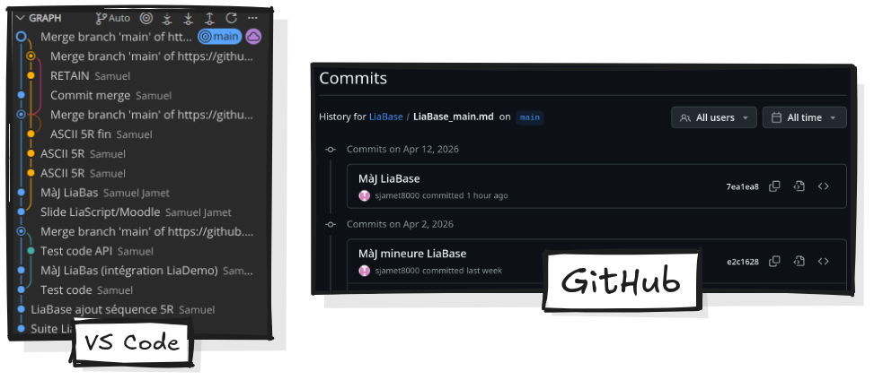
--{{1}}--Le suivi des versions implique aussi que votre travail, ou le travail de quelqu’un d’autre qui vous ferait de l’œil est implicitement disponible à la modification et au remixage. sans risque de corruption (on peut toujours revenir à une version antérieure).
{{2}}Le versioning, une invitation au partage et à la collectivisation rigoureuse des moyens de productions pédagogiques.
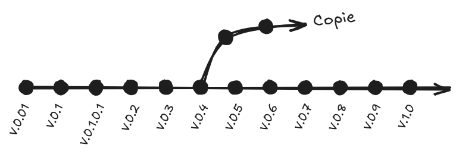
L’action reuse/réutiliser, c’est :
” use your original, revised, or remixed copy of the resource publicly ”
– David Wiley (Defining the “Open” in Open Content and Open Educational Ressources, 2023)
A ce stade, je peux d’ores et déjà réutiliser le cours à mon propre compte, si j’estime ne pas avoir besoin d’apporter plus de modifications ou de faire des adaptations supplémentaires.
L’action redistribute/redistribuer, c’est :
” share copies of your original, revised, or remixed copy of the resource with others ”
– David Wiley (Defining the “Open” in Open Content and Open Educational Ressources, 2023)
Ce que tu fais : 1. Sur GitHub, tu ouvres le
.md modifié 2. Tu cliques sur “Raw” 3. Tu copies l’URL raw
4. Tu la colles dans le générateur de lien LiaScript (ou directement
dans l’URL LiaScript) 5. Tu montres le cours live, utilisable 6. Tu
évoques : “ce lien, je peux le poster n’importe où — mon ENT, un mail,
Zenodo pour archivage pérenne avec DOI…”
Ce que tu dis : > “Dernière étape : je veux partager ma version remixée. Je récupère le lien raw, je le bascule en URL LiaScript, et j’obtiens un cours vivant, accessible à n’importe qui avec juste un navigateur. Ce lien, je peux le poster où je veux : mon ENT, un mail à mes collègues, ou même Zenodo pour obtenir un DOI et un archivage pérenne. > > Ça, c’est le Redistribute. Et remarquez quelque chose d’important : GitHub, qu’on présente souvent comme un outil de développeur, fonctionne ici comme un espace de partage et de valorisation de contenus pédagogiques. Exactement comme HAL ou Zenodo, mais avec en plus la dimension éditable.”
Plan B : lien LiaScript déjà généré en amont, prêt à coller si la chaîne casse.
Ce que tu dis : > “Et maintenant, quelqu’un d’autre peut forker mon cours remixé, le réviser à son tour, le re-remixer, le re-redistribuer. Le cycle des 5R reprend. C’est ça, une culture REL vivante : pas une ressource figée qu’on télécharge, mais une ressource qui circule et qui s’enrichit. > > [Transition vers Souplesse] On vient de voir que vos contenus peuvent circuler librement. Mais encore faut-il que l’outil soit capable de porter ce que vous voulez vraiment enseigner. Passons au deuxième argument : la souplesse.”
Questions chat : tu prends 1-2 questions rapides si le timing le permet, sinon tu renvoies à la fin.
{{0-1}}On peut juste écrire du texte, tout simplement... {{1-2}}On peut insérer des images…
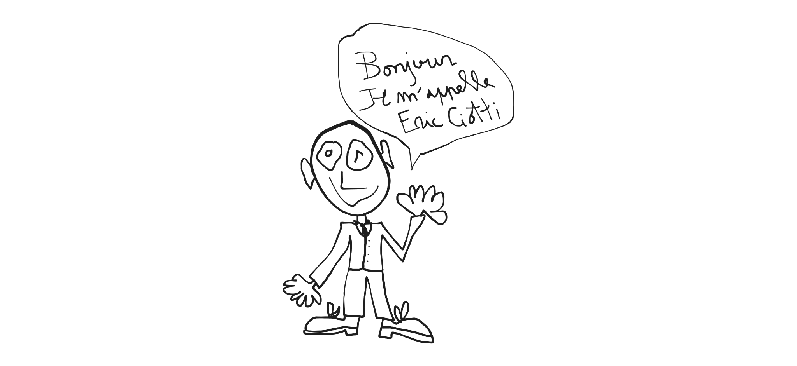
{{2-3}} +-------------+
+-->| Des schémas |
| +-------------+
|
+---------------+ | +--------------+
| On peut faire +----+-->| en ASCII-art |
+---------------+ +--------------+
{{3-4}} +-------------+
+-->| Des schémas |
| +-------------+
|
+---------------+ | +--------------+
| On peut faire +----+-->| en ASCII-art |
+---------------+ | +--------------+
|
| +----------------------------------+
+-->| qui deviennent des images en svg |
+----------------------------------+
{{4-5}}On peut intégrer à peu près tout et n’importe quoi, présentation Genially, tableau Miro, mais surtout… du H5P :-) (si vous voulez rester dans de la REL pure et dure)
{{4-5}} {{5}}Il est même possible d’exécuter du code
{{5-6}}const motCle = "bibliothécaires formateurs";
const url = `https://api.archives-ouvertes.fr/search/?q=${encodeURIComponent(motCle)}&rows=3&sort=submittedDate_s desc`;
fetch(url)
.then(response => response.json())
.then(data => {
console.log("📊 Nombre total de résultats dans HAL : " + data.response.numFound.toLocaleString('fr-FR'));
console.log("---");
console.log("🔎 3 publications les plus récentes :");
console.log("");
data.response.docs.forEach((doc, i) => {
// On nettoie les chevrons encodés pour l'affichage
const citation = doc.label_s.replace(/⟨/g, '⟨').replace(/⟩/g, '⟩');
console.log(`[${i+1}] ${citation}`);
console.log(` 🔗 ${doc.uri_s}`);
console.log("");
});
})
.catch(error => {
console.log("❌ Erreur : " + error);
});
"Interrogation de HAL en cours..."; --{{0}}--LiaScript à la qualité d’être un outil remplaçable, il ne vous prend pas en otage. S’il meurt, on ne perd que la forme, mais pas le fond, pas les éléments, pas les intentions pédagogiques fondamentales. L’outil en tant que tel n’est qu’un interpréteur de votre code, et ce code se trouve être en majeure partie du MarkDown, donc globalement du texte.
{{0-1}} {{1-2}}+-----------------------+ +------------------------+ +-----------+
| | | | | |
| Votre document en .md +-------->| Interpréteur LiaScript +--------->| Votre REL |
| | | | | |
+-----------------------+ +------------------------+ +-----------+
Pour utiliser tranquillement Liascript, la création d’un compte sur GitHub est nécessaire.
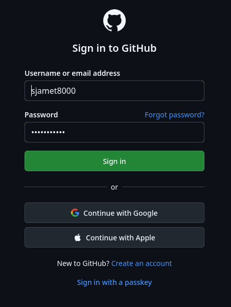
{{1-3}} Cliquez sur l’icône de votre compte en haut à droit de l’écran, puis sur Repositories
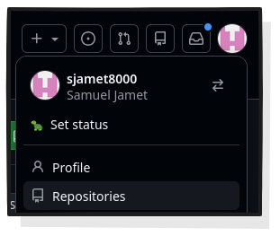
{{2-3}} Cliquez sur New pour créer un nouveau répertoire.
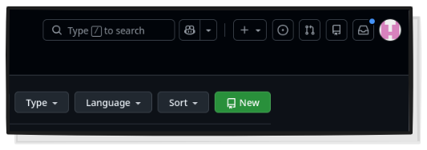
{{3}} Entrez les informations nécessaires. Evitez les espaces dans le nom du répertoire. la description n’est pas obligatoire, mais elle peut aider à ce que l’on retrouve votre répertoire. Super important : votre répertoire doit impérativement être public pour que Liascript puisse l’interpréter.
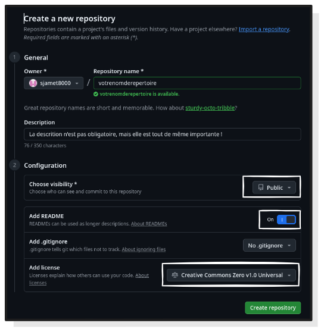
{{4}} Une fois votre répertoire créé, vous pouvez y accéder depuis Repositories en cliquant sur l’icone de votre profil. Notez qu’au moment de la création du répertoire, il ne contient rien que la LICENCE et le README.md.
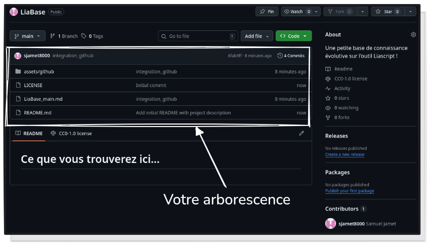
Visual Studio Code est un éditeur de texte gratuit et open source maintenu par Microsoft (eh oui, snif). Très utilisé par les développeur.ses, on va plutôt l’utiliser comme simple éditeur de MarkDown, un peu amélioré par le créateur de Liascript, grâce à quelques plug in.
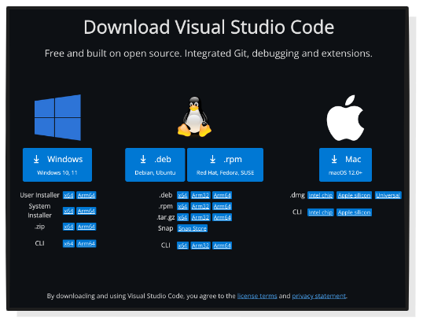
Rendez-vous sur la page de téléchargement et procédez à l’installation du logiciel, on se retrouve de l’autre côté.
Pour utiliser confortablement Liascript, on va devoir installer deux
extensions développées par André Dietrich. Rendez-vous dans le magasin
d’extensions (cf. capture ci-dessous ou
Ctrl + Shift + X).
Entrez liascript dans la barre de recherche, normalement
trois extensions doivent remonter. Cliquez sur
LiaScript-Preview puis sur Install.
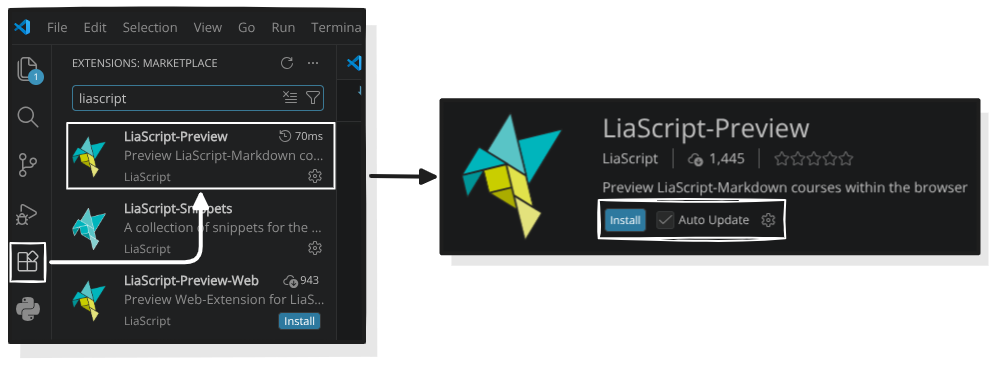
Ce plug in va vous permettre de lancer une prévisualisation de ce que vous êtes en train de produire depuis Visual Code, sur votre navigateur favori, en local, sans connexion internet. Plutôt utile pour vérifier et tester votre cours au fil de l’eau !
Le second plug in se nomme LiaScript-Snippets, il n’est pas absolument nécessaire à l’utilisation de LiaScript avec VS Code, mais c’est une aide non négligable quand on débute.
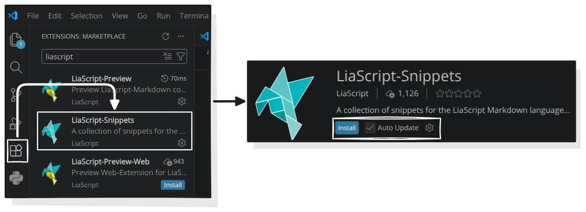
Une fois l’installation faite, ce n’est pas terminé. Sur la page de
LiaScript-Snippets, on vous demande de copier-coller un
morceau de code. Sélectionnez le morceau de code mis en exergue, puis
Ctrl + C.
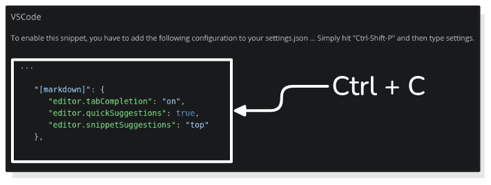
Faites Ctrl + Shift + P puis entrez
settings et cliquez sur Open User Settings (JSON), et
collez le morceau de code entre les deux accolades (je le remets
ci-dessous), puis quittez.
"[markdown]": {
"editor.tabCompletion": "on",
"editor.quickSuggestions": true,
"editor.snippetSuggestions": "top"
},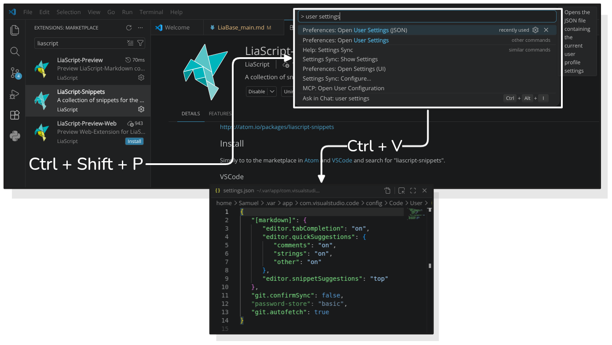
LiaScript-Snippets va vous permettre d’“appeler” des
fonctionalités de LiaScript comme des modèles mise en formes spécifiques
(tableaux, graph, etc.), ou des modèles de quizs, et une miriade de
choses super chouettes avec le préfixe lia.
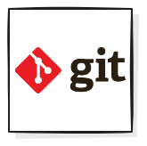
Git est un logiciel de gestion de versions décentralisé développé par Linus Torvalds, le créateur du noyeau Linux. Pour en savoir plus sur Git et son fonctionnement, vous pouvez consulter la page Wikipédia qui est bien détaillée.Aller sur le site officiel et de télécharger Git for Windows.
Sélectionnez l’installateur Git for Windows/x64 Setup
qui devrait fonctionner dans la plupart des cas.
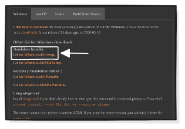
L’installateur de Git sous Windows a beaucoup d’étapes avec plein de cases à cocher, laissez toutes les options par défaut et de cliquer sur “Next” jusqu’au bout. Ça ira très bien pour 99 % des usages.
Une fois installé, ouvrez le terminal de commande Git Bash.

Vérifiez que Git est bien installé en entrant :
git --versionSi le terminal vous renvoie git version 2.5x.x.windows
c’est bon.

C’est là qu’il faut définir l’identité, pour que Git sache qui fait les modifications. Voici les commandes à entrer (le –global est important pour que ça s’applique à tous vos futurs projets) :
Pour le nom (avec les guillemets) :
git config --global user.name "Prénom Nom"Pour l’email (idéalement celui que vous utilisez pour GitHub) :
git config --global user.email "votre.email@exemple.com"Aujourd’hui, le standard est d’appeler la branche principale main (au lieu de l’ancien master). Autant configurer ça tout de suite pour éviter des confusions plus tard :
git config --global init.defaultBranch mainPour vérifier que tout a bien fonctionné, taper :
git config --listCela affichera votre nom, votre mail et vos réglages. Si vous voyez vos infos, c’est tout bon !
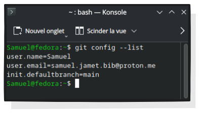
Rendez-vous dans le dossier dans lequel vous souhaitez synchroniser votre répertoire.
A titre personnel, je clone mes répertoires directement dans le dossier Documents, mais vous pouvez choisir un autre dossier.
Une fois dans le dossier, faites un clic droit à
l’intérieur puis cliquez sur Open Git Bash here pour ouvrir
le terminal.

Tapez :
git clone https://github.com/nomdevotrecompte/nomdurepertoire.git
Vous trouverez l’URL du répertoire en vous rendant… dans votre
répertoire bien joué, et en cliquant sur <> code.
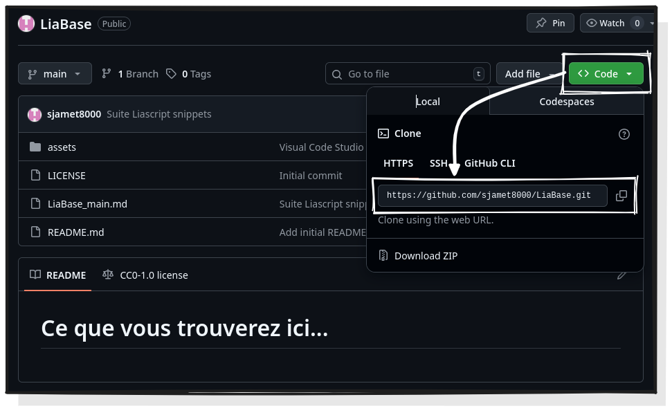
Et voilà ! Votre répertoire avec tout son contenu est cloné sur votre
PC ! Si c’est votre premier répertoire, seul le README.mdet
la LICENCE ont été clonées, mais ce n’est qu’un début.

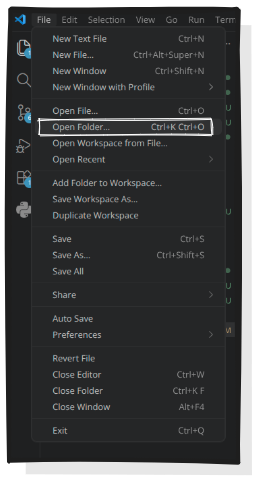
Rouvrez VS Code et ouvrez votre répertoire synchronisé :File > Open Folder... > "Nom du répertoire > Select folder"
(Sélectionnez simplement le répertoire cloné, ne double-cliquez pas
dessus)
Votre arborescence s’affichera sur la partie gauche de la fenêtre de VS Code. Sauf événement cataclismique, elle sera parfaitement identique à celle que vous avez dans l’explorateur de fichiers Windows et votre répertoire dans GitHub.
Sélectionnez le README.md pour afficher l’éditeur de
texte et voyez ce que ça donne. C’est visuellement beaucoup plus sobre
et plus du tout WYSIWYG, mais on s’y fait.

Evidemment, vous n’allez pas vous mettre à composer dans le
README.md (conservez ce fichier pour expliquer comment
utiliser votre ressource !)
Dans l’arborescence de votre répertoire, toujours dans VS Code,
cliquez sur l’icône New Filejuste à côté du nom de votre
répertoire.
 Attention, comme vous le voyez sur la capture, il est
indispensable de spécifier le format du fichier nouvellement créé, et ce
format, c’est du
Attention, comme vous le voyez sur la capture, il est
indispensable de spécifier le format du fichier nouvellement créé, et ce
format, c’est du .md donc le format MarkDown. Vous pouvez
nommer votre document comme vous le souhaitez, mais ajoutez
.md à la fin si vous voulez que ça fonctionne.
Cliquez sur le document pour afficher l’éditeur de texte. Par défaut, il vous propose de générer du code, mais vous ne mangez pas de ce pain-là. Positionnez-vous dans l’éditeur comme vous le feriez pour un éditeur de texte classique et tapez :
lia-initVous vous souvenez du plug in LiaScript Snippets ?
C’est là qu’il entre en action. Appuyez sur entrée pour
faire apparaître une première base du cours à partir de laquelle vous
allez pouvoir avancer, ainsi qu’un certain nombre de métadonnées super
utiles.

Il est temps de vous mettre au travail, vous avez cloné votre répertoire GitHub, vous allez maintenant l’alimenter et le mettre à jour. Pour cela, vous aller lier VS Code à votre compte GitHub (il existe d’autres voies pour synchroniser vos répertoires, ils seront détaillés dans des versions ultérieures de ce guide).
En bas à gauche de la fenêtre de VS Code, cliquez sur
Accountspuis sur
Backups and Sync Settings.

Les Settings Syncs’ouvrent en haut de la fenêtre (oui on
voyage), cliquez sur Sign in puis sur
Sign in with GitHub

 VS Code va automatiquement ouvrir une page de votre navigateur
enregistré par défaut pour vous demander si vous souhaitez vous
connecter à GitHub, cliquez sur
VS Code va automatiquement ouvrir une page de votre navigateur
enregistré par défaut pour vous demander si vous souhaitez vous
connecter à GitHub, cliquez sur Sign in puis continuez. Si,
de retour sur VS Code, le nom de votre compte s’affiche quand vous
cliquez sur Accounts c’est bon !
Vous avez créé votre premier document et vous souhaitez qu’ils soit synchronisé sur votre répertoire GitHub, vous allez donc faire ce qu’on appelle un commit, c’est-à-dire une modification du répertoire qui sera décrite et signée de votre nom.
Cliquez sur Source Control(par défaut, parmi les
quelques icônes sur le côté gauche de la fenêtre de VS Code)

--{{1}}--Vous arrivez dans le panneau de contrôle des sources. Juste en
dessous du bouton Commit un certain nombre de
Changes sont listés (notamment la création de votre nouveau
document.) Cliquez sur le petit + en face de
Changes les éléments listés deviennent des
Staged Changesprêts à être envoyé dans votre répertoire
GitHub. N’oubliez pas de décrire votre modification/ajout avant de
cliquer sur Commit puis de cliquer sur
Sync Changes pour que votre répertoire GitHub soit
synchronisé.
--{{1}}--Si vous n’êtes pas familier avec le MarkDown, cette section est là pour y remedier. Pas d’inquiétude, les bases du langage sont très simples et vous aurez vite fait le tour du principal de sa syntaxe. Le plus difficile reste de se défaire de l’accoutumance des éditeurs de texte WYSIWYG (What You See Is What You Get) comme Word.
Ici,
What you see may not be very pleasant...… mais au moins, ça ne se casse pas.
--{{0}}--Sur LiaScript, une habitude à prendre, c’est de structurer votre
contenu (quel qu’il soit). Entrez #2
suivi d’un texte pour créer la page de titre de votre cours, puis
structurez de la manière suivante :
# Titre principal de votre cours
...
## Titre de la première section
...
### Titre d'une sous-section
...
## Titre de la deuxième section --{{1}}--Vous verrez votre table des matières cliquable se structurer sans que vous ayez besoin de faire quoi que ce soit d’autre chaque section, sous-section devient une page du cours.
Il est aussi possible de créer des sous-sections à l’intérieur d’une page de cours
## Titre d'une section
Sous-section dans la page
================
Sous-sous-section dans la même page
-------------------- --{{0}}--En MarkDown, la mise en forme du texte se fait en entourant ce dernier avec certains caractères que voici :
*italique* ->
italique
**gras** ->
gras
***gras et italique *** -> gras et
italique
_italique aussi_ -> italique
aussi
__gras aussi__ -> gras
aussi
___gras et italique aussi___ -> gras
et italique aussi
~barré~ ->
barré
--{{1}}--Les mises en forme qui suivent n’existent pas en MarkDown de base :
~~souligné~~ ->
souligné (attention avec l’éditeur
VS Code votre texte apparaîtra barré, mais il sera bien
souligné dans LiaScript
~~~barré et souligné~~~ -> ~barré et
souligné~ (remarque similaire ici,
l’affichage du texte dans VS Code peut être confusionnalisant)
^en exposant^ -> ^en
exposant^ (comme ça vous allez pouvoir écrire
XIXe et pas XIXe).
Find out what you can even do more with quizzes:
https://liascript.github.io/course/?https://raw.githubusercontent.com/liaScript/docs/master/README.md
Transition Partage → Souplesse > “On vient de voir que vos contenus peuvent circuler, être repris, modifiés, redistribués. Mais encore faut-il que l’outil soit capable de porter ce que vous voulez enseigner. Parce qu’un outil qui vous enferme dans un format pauvre, c’est une autre forme de dépendance. Regardons jusqu’où LiaScript peut aller.”
Transition Souplesse → Résilience > “Vous avez vu qu’on peut aller très loin avec LiaScript. Mais il reste une question : qu’est-ce qui se passe si LiaScript disparaît demain ? Si le projet s’arrête ? C’est là qu’intervient le 3ème argument : vos contenus vous survivent.”
Clôture > “Partage, souplesse, résilience. Trois manières différentes de dire la même chose : avec LiaScript, vos contenus pédagogiques vous appartiennent vraiment. Et ça, dans un paysage dominé par des plateformes qui captent et enferment, c’est politique.”